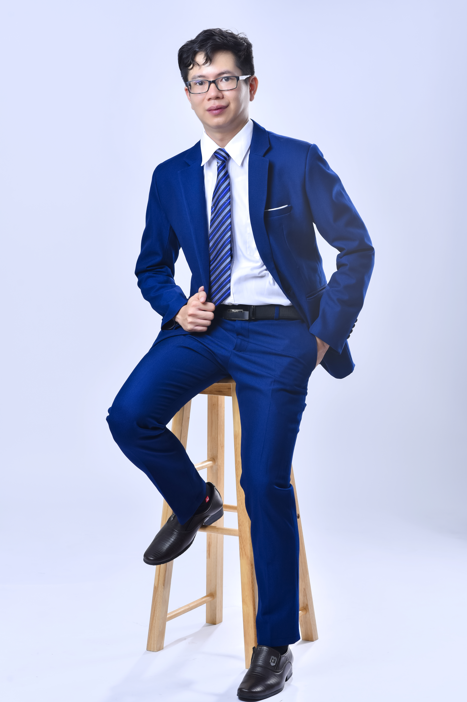

Ba mẹ có thể định hướng cho con. Nhưng con cần hiểu và sở hữu lựa chọn của mình.
Cùng con kiểm tra lựa chọn ngành, quốc gia và kế hoạch du học dựa trên điều con phù hợp, yêu cầu thực tế của ngành nghề và năng lực con cần chuẩn bị.
Lộ trình cá nhân hóa gồm 8 buổi coaching 1:1.
Xem chương trình có phù hợp với con không
“Vì sao con chọn ngành này?”
Gia đình có thể đã chuẩn bị rất nhiều. Nhưng một lựa chọn tốt vẫn cần bắt đầu từ việc con hiểu mình.
Không chỉ là một ngành để chọn. Mà là cơ sở để con biết mình đang chọn gì và cần chuẩn bị ra sao.
Chương trình giúp gia đình chuyển những băn khoăn hiện tại thành một cách nhìn rõ hơn về bản thân, ngành nghề, môi trường học tập và các bước phát triển tiếp theo.
Học sinh nhận được
- Hiểu rõ hơn điểm mạnh, điểm yếu và yếu tố ảnh hưởng đến lựa chọn.
- Hiểu yêu cầu thực tế của ngành.
- Nhận diện khoảng cách cần phát triển.
- Có kế hoạch 28 ngày và kế hoạch 4 năm.
Phụ huynh nhận được
- Cơ sở cùng con đánh giá ngành và quốc gia.
- Hiểu con cần chuẩn bị gì.
- Biết cách hỗ trợ mà không quyết định thay con.
- Có ngôn ngữ chung để trao đổi về hướng đi.
Không bắt đầu bằng việc chọn một ngành. Bắt đầu bằng việc hiểu con đang đứng ở đâu.
Ứng dụng mô hình do TS. Tal Ben-Shahar phát triển, kết hợp coaching 1:1, phân tích trải nghiệm cá nhân và đối chiếu với yêu cầu thực tế của ngành nghề.
Hiểu bản thân
Làm rõ trải nghiệm, giá trị, điểm mạnh và điểm yếu.
Nhận diện rào cản
Nhìn ra những niềm tin hoặc điểm thiếu chuẩn bị.
Đối chiếu thực tế
Kiểm tra ngành, công việc, môi trường và năng lực cần có.
Xây kế hoạch
Chuyển kết quả thành lộ trình phát triển có thể bắt đầu.
Một lộ trình để con hiểu mình, kiểm tra hướng đi và bắt đầu xây dựng sự nghiệp.
Quy trình 7 bước
Xây dựng sự nghiệp bền vững.
4 rào cản
Nhận diện rào cản sự nghiệp của người trẻ.
Kế hoạch 28 ngày
Bắt đầu phát triển bản thân.
Kế hoạch 4 năm
Học tập và tham gia trải nghiệm.
Một quá trình có cấu trúc để con từng bước làm rõ hướng đi.
Bắt đầu từ câu hỏi đúng
Làm rõ bối cảnh, lựa chọn và điều gia đình đang băn khoăn.
Hiểu mình và rào cản
Khám phá trải nghiệm, năng lực và điểm cần phát triển.
Kiểm tra với thực tế
Đối chiếu hướng đi với ngành nghề và môi trường học tập.
Chuyển thành kế hoạch
Hoàn thiện các kế hoạch phát triển và bước tiếp theo.
Coaching, định hướng và thực tế nghề nghiệp trong cùng một lộ trình.
Đồng hành cùng cá nhân trong quá trình phát triển và xây dựng hướng đi.
Claim cần bổ sung phạm vi và mốc thời gian trước khi public.
Giúp người trẻ kết nối việc học với thực tế ngành nghề.
Trước khi đăng ký, gia đình thường muốn biết điều gì?
Ba mẹ đã định hướng ngành và trường rồi, vì sao cần coaching?
Coaching giúp kiểm tra xem con có hiểu lựa chọn đó không, ngành học thực tế đòi hỏi gì và con cần chuẩn bị năng lực nào trước khi đi.
Đây có phải là một bài test tính cách không?
Không. Chương trình kết hợp coaching, câu hỏi định hướng, phân tích trải nghiệm và đối chiếu với thực tế ngành nghề.
Nếu con chưa biết mình thích gì thì có tham gia được không?
Có thể, nếu con có mức độ sẵn sàng nhất định để trao đổi, trả lời câu hỏi và nhìn lại trải nghiệm của mình.
Chương trình có bao gồm hồ sơ, visa hoặc học bổng không?
Không. Chương trình tập trung vào coaching, định hướng ngành nghề và kế hoạch phát triển.
Chương trình có cam kết con chọn đúng ngành không?
Không. Chương trình giúp gia đình có thêm dữ liệu, câu hỏi đúng và kế hoạch để con chủ động hơn trong việc lựa chọn và điều chỉnh.
Trước khi tiếp tục đầu tư vào kế hoạch du học, hãy bắt đầu bằng một cuộc trao đổi rõ ràng.
Buổi trao đổi giúp gia đình xem chương trình có phù hợp với nhu cầu hiện tại của con hay không.